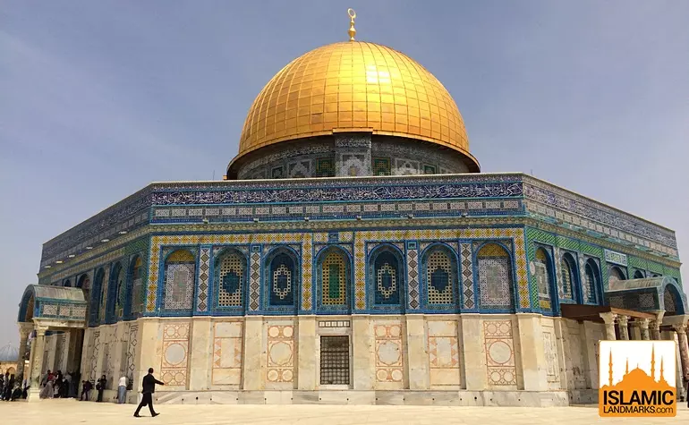
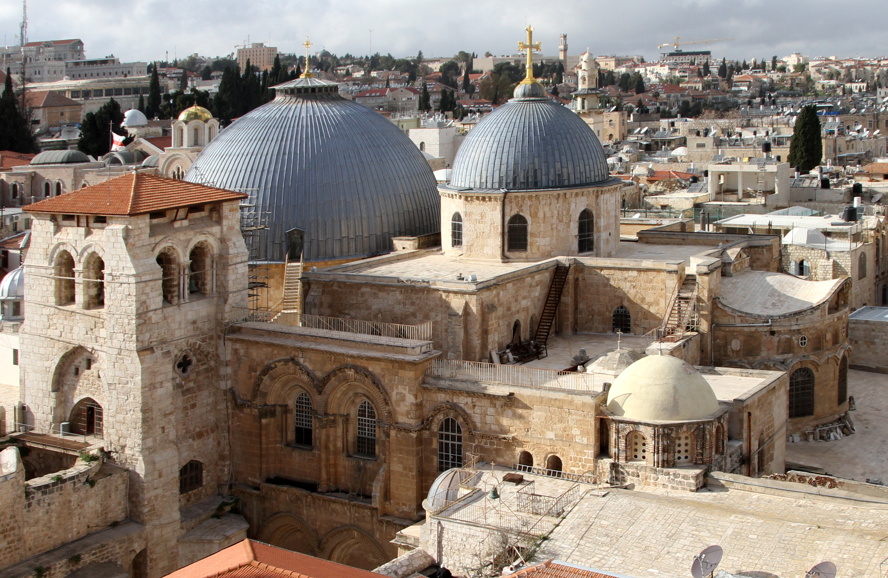

Holy Sites of Jerusalem
Discover the sacred places that make Jerusalem the spiritual heart of three major religions. Each site holds deep historical and religious significance.

Al-Aqsa Mosque
The third holiest site in Islam, Al-Aqsa Mosque is a magnificent structure that has stood for over 1,300 years. Its golden dome and intricate architecture make it one of Jerusalem's most recognizable landmarks.
Visiting Hours
- Open daily for prayers
- Tourist visits: 7:30 AM - 11:00 AM, 1:30 PM - 2:30 PM
- Closed during Friday prayers
Dress Code
- Modest clothing required
- Women must cover head, arms, and legs
- Men should wear long pants and shirts with sleeves
Important Notes
- Security check required before entry
- No photography inside the mosque
- Respect prayer times and worshippers

Church of the Holy Sepulchre
One of Christianity's most sacred sites, this church is believed to contain both the site of Jesus' crucifixion and his empty tomb. The church is shared by six Christian denominations.
Visiting Hours
- Open daily: 5:00 AM - 8:00 PM (April-September)
- Open daily: 4:00 AM - 7:00 PM (October-March)
- Special services on Sundays and holidays
Important Sites Inside
- Stone of Anointing
- Golgotha (Calvary)
- Holy Sepulchre (Tomb)
- Chapel of the Finding of the Cross
Visitor Guidelines
- Modest dress required
- No flash photography
- Respect ongoing services
- Be prepared for crowds

Western Wall (Kotel)
The Western Wall is the last remaining wall of the Second Temple and is Judaism's holiest prayer site. It has been a place of pilgrimage and prayer for Jews for centuries.
Visiting Hours
- Open 24 hours
- Best times: Early morning or evening
- Special access during holidays
Prayer Areas
- Separate sections for men and women
- Prayer books available
- Kippot (head coverings) provided for men
Visitor Guidelines
- Modest dress required
- No photography on Shabbat
- Respect prayer customs
- Security check required